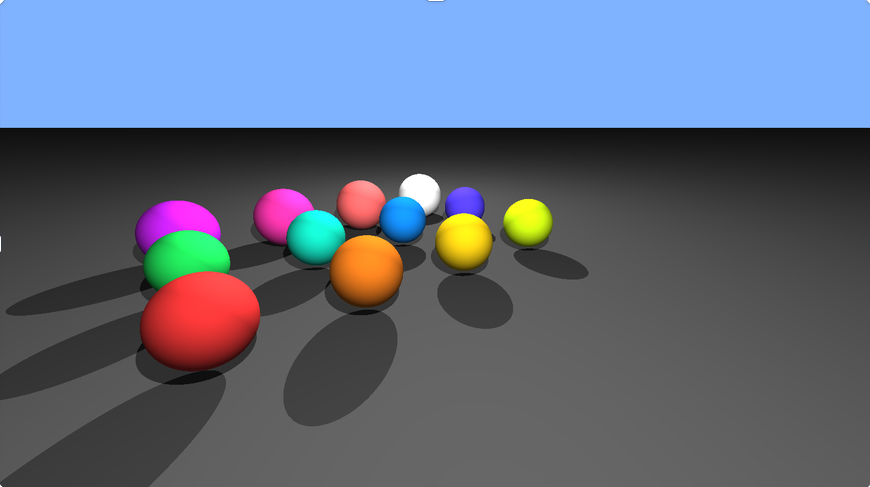
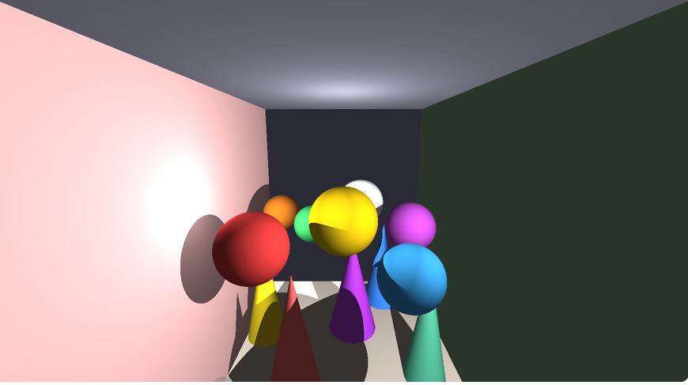

Deep Learning - Lunar Lander
Projet phare · IA · PythonTrois algorithmes d'apprentissage par renforcement comparés sur lunar-lander-v3 (Gymnasium) : Q-Learning discrétisé, Deep Q-Learning, puis PPO face à du vent. 95 % de réussite sur Lunar Lander.
Disponible pour un stage · avril → fin juillet Stage · avril → fin juillet
Trois algorithmes d'apprentissage par renforcement comparés sur lunar-lander-v3 (Gymnasium) : Q-Learning discrétisé, Deep Q-Learning, puis PPO face à du vent. 95 % de réussite sur Lunar Lander.
Un jeu en réseau où des équipes d'IA s'affrontent sur Trantor, un monde en tuiles : la première équipe à amener 6 joueurs au niveau maximal l'emporte. Trois programmes dialoguent en TCP via un protocole texte.
Moteur de lancer de rayons modulaire : scènes décrites en libconfig, sphères, plans et cônes créés par factories, matériaux, ombres et lumières multiples.

423 690rayons primaires lancés : 870 × 487 pixels, un rayon par pixel

Deux approches : K-means sur 1 011 témoignages de patients vectorisés en TF-IDF, et classification de radiographies thoraciques (sain, pneumonie, tuberculose) réduites en 128×128 puis par PCA.
Le K-means regroupe des points en k groupes. On place k centroïdes, chaque point rejoint le plus proche, puis chaque centroïde se déplace au centre de ses points ; on recommence jusqu'à ce que plus aucun point ne change de groupe.
Ici, chaque point est le témoignage d'un patient, transformé en vecteur de mots (TF-IDF) puis projeté en deux dimensions (PCA). Le graphique mesure la distorsion, la distance moyenne au centroïde, pour k de 1 à 49 : elle chute jusqu'à environ 5 groupes puis ne baisse presque plus. k = 10 a été retenu.
Jeux et bibliothèques graphiques chargés dynamiquement (.so) et interchangeables à chaud : SFML, SDL2, NCURSES × Snake, Minesweeper.
Choisissez un jeu et une bibliothèque d'affichage : le cœur les charge à chaud, sans redémarrer.
Shell inspiré de tcsh : exécution de commandes, pipes, séparateurs et redirections (< << > ; |), environnement et builtins.
Programmation système : shell POSIX, gestion mémoire, Corewar. Le socle de ma formation EPITECH.
Dans : 42sh
Architecture orientée objet et modulaire : bibliothèques dynamiques, raytracing, CMake, tests.
IA et data : apprentissage par renforcement, supervisé et non supervisé, tests automatisés.
Dans : Lunar Lander · Doctor Cvrie
Débogage et vulgarisation de concepts techniques ; production de cours et de sujets de projets pour une centaine d'étudiants de 1re année.
Développement de tests automatiques en Python, création de vidéos et de sujets, débogage pour une centaine d'étudiants de la 1re à la 3e année.
Études d'informatique - GPA 3.04
Licence d'économie, option gestion
Baccalauréat mention bien - Maths, Physique-Chimie, SES
Ingénierie logicielle, IA, systèmes : écrivez-moi, je serai ravi d'échanger.